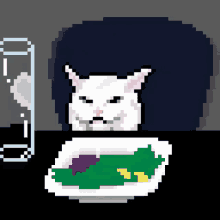

hola
tritón con mantequilla de maní
| ingrediente | cantidad |
|---|---|
| tritón | 11 (una porción) |
| mantequilla de maní | once cucharadas |
primero debes abrir delicadamente la galleta, cuidando de no romper una de sus caras. para esto, trata de concentrar la fuerza en torcer la galleta, como si uno de sus lados fuese una tapa de botella. al mismo tiempo, no debes apretarla muy fuerte, ya que esta es la causa más común de fractura tritoneana en latinoamérica1
si tienes problemas para abrir la galleta, puedes pedirle ayuda a tu terapeuta. en su defecto, te dejo el siguiente videotutorial para abrir galletas usando solo materiales caseros n.n
después hay que volver a juntar las partes untando la mantequilla en medio en verdad no es tan complicado no sé qué más podrías esperar de esta receta pero eso yapo que esti bien xau :p